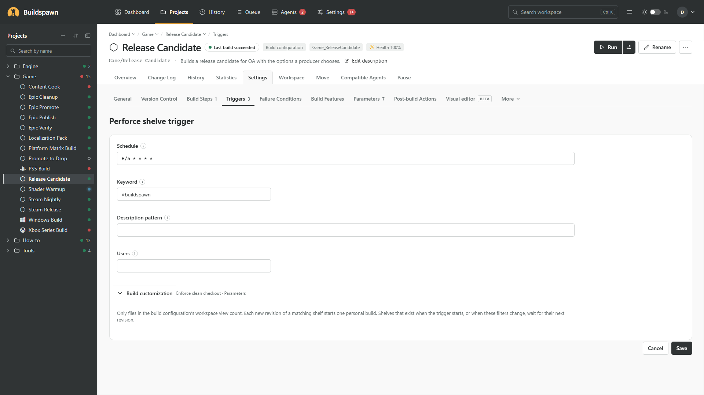

Perforce shelve trigger
Starts a personal build for each new shelf that matches your rules.
When to use it
Use it to test a change before it is submitted. A developer shelves a change with a keyword in its description, and Buildspawn builds the shelf.
How to set it up
- Open the build configuration and go to Settings › Triggers.
- Click Add new trigger and click Add next to Perforce shelve trigger.
- Check the Schedule and the Keyword. Add a Description pattern or Users if you need them.
- Optional: open Build customization to tick Enforce clean checkout and add Parameters.
- Click Save.

Every field
| Field | What it does | Default | Example |
|---|---|---|---|
| Schedule | How often to look for new shelves, in cron syntax. Empty: only when a Perforce trigger calls Buildspawn. | H/5 * * * * | H/2 * * * * |
| Keyword | Only changelists whose description contains this text. Required unless a description pattern or users are set. | #buildspawn | #build |
| Description pattern | A regular expression the description must match. Empty: any description. | Empty | ^QA: |
| Users | Perforce users whose shelves count, separated by spaces or commas. Empty: everyone. | Empty | dana.k sam.lee |
| Build customization › Enforce clean checkout | Every build this trigger starts begins with an empty workspace. | Off | On |
| Build customization › Parameters | Build parameters for these builds, one name=value per line. They win over the defaults. Names that start with p4. belong to Buildspawn. | Empty | CONFIG=Development |
A worked example
Add the trigger with keyword #buildspawn. A developer shelves changelist 51234 with the description Fix crate collision #buildspawn. Within five minutes a personal build starts with that shelf.
What you see when it runs
Each new revision of a matching shelf starts one personal build. The cause says Started by the Perforce shelve trigger: shelf 51234 of dana.k. The Shelves tab lists them. Only files in the build configuration's workspace view count. Shelves that exist when the trigger starts, or when the filters change, wait for their next revision.
Problems and fixes
| Problem | What to do |
|---|---|
| The keyword is required | Type a keyword, a pattern or a user. |
| A parameter name is refused | Names are letters, digits, _ and ., and cannot start with p4.. Each line must be name=value. |
| No build for an old shelf | Only new revisions start a build. |